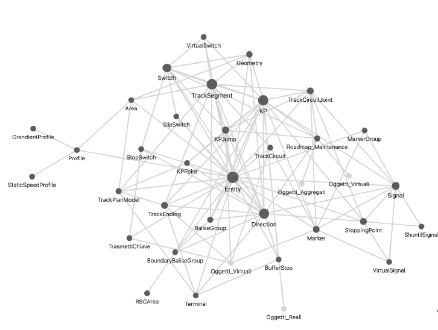
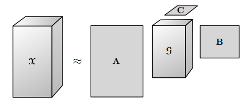

About Me
I am a 1st-year Ph.D. student in Computer Science and Mathematics at the University of Bari Aldo Moro, conducting research at the Computational Intelligence Laboratory (CILAB) within the Department of Computer Science, under the supervision of Prof. Giovanna Castellano, Prof. Gennaro Vessio, and Dott. Pasquale De Marinis.
My doctoral research project focuses on "Knowledge-Driven Neuro-Symbolic AI for Data Integration and Diagnostics in Railway Systems". The goal is to bridge the semantic gap between formal engineering domain knowledge (such as XML/CAD layouts, ERTMS/ETCS signaling logic, and OWL/SHACL ontologies) and data-driven AI (sensor telemetry streams, predictive maintenance) through Graph Neural Networks (GNNs), Temporal Graph Transformers, and World Models.
I completed both my academic degrees at the University of Bari Aldo Moro:
- Master's Degree (M.Sc.) in Computer Science (curriculum in Artificial Intelligence), conferred in September 2026. Thesis investigated self-supervised Vision Transformers (DINOv3) and multimodal deep learning for flower phenotyping.
- Bachelor's Degree (B.Sc.) in Informatica e Tecnologie per la Produzione del Software (ITPS), conferred in July 2024, focusing on multidimensional tensor factorization (Tucker decomposition) for hyperspectral change detection.
Research Interests
- Neuro-Symbolic AI & Knowledge Graphs: Integrating formal domain ontologies (OWL, SHACL, RailML) with deep latent representations for constraint-compliant reasoning.
- Graph Neural Networks & Relational Learning: GNNs, Temporal Graph Transformers, and topology-aware relational learning over heterogeneous sensor streams.
- Computer Vision & Multimodal Learning: Visual phenotyping, representation learning (DINO, ViTs, ResNet), contour segmentation, and multimodal sensor fusion.
- Industrial Diagnostics & Trustworthy AI: Predictive maintenance, explainable diagnostics (XAI), safety-critical verification, and railway intelligence (ERTMS/ETCS).
News
Research & Projects
-

Ph.D. Project (2026 – 2029)Ph.D. Program in Computer Science and Mathematics, Computational Intelligence Lab (CILAB), University of Bari Aldo Moro (Started Oct 1, 2026).This doctoral research develops a neuro-symbolic framework to bridge the gap between static formal railway knowledge (XML/CAD schemas, ERTMS/ETCS signaling constraints, RailML ontologies) and live sensor telemetry. By embedding formal validation rules directly into Graph Neural Networks and Temporal Graph Transformers, the system achieves interpretable predictive maintenance, automated safety verification, and explainable operator diagnostics.@article{abatescianni2026railway, title={Knowledge-Driven Neuro-Symbolic AI for Data Integration and Diagnostics in Railway Systems}, author={Abatescianni, Lorenzo}, journal={Ph.D. Research Project, Computational Intelligence Laboratory (CILAB), University of Bari Aldo Moro}, year={2026} } -
 M.Sc. Thesis · Sep 2026
M.Sc. Thesis in Computer Science (Artificial Intelligence), University of Bari Aldo Moro, September 2026.Introduces a non-destructive, pre-sowing automated computer vision system to predict seedling flower traits directly from resting seeds. Combines RGB visual streams (HSV segmentation, Suzuki-Abe contour tracing, canonical orientation) with spectral data, evaluated using supervised ResNet50 and self-supervised DINOv3 backbones followed by PCA dimensionality reduction and MLP multimodal classification.
M.Sc. Thesis · Sep 2026
M.Sc. Thesis in Computer Science (Artificial Intelligence), University of Bari Aldo Moro, September 2026.Introduces a non-destructive, pre-sowing automated computer vision system to predict seedling flower traits directly from resting seeds. Combines RGB visual streams (HSV segmentation, Suzuki-Abe contour tracing, canonical orientation) with spectral data, evaluated using supervised ResNet50 and self-supervised DINOv3 backbones followed by PCA dimensionality reduction and MLP multimodal classification.@mastersthesis{abatescianni2026flower, title={Computer Vision Techniques for Flower Phenotyping}, author={Abatescianni, Lorenzo}, school={University of Bari Aldo Moro}, year={2026}, month={September} } -

B.Sc. Thesis · Jul 2024B.Sc. Thesis in Informatica e Tecnologie per la Produzione del Software (ITPS), University of Bari Aldo Moro, July 2024.Presents an efficient change-detection framework for multidimensional hyperspectral image cuboids using Tucker tensor decomposition. By factorizing the 3D tensor into a compact core tensor and factor matrices along the spatial and spectral modes, the algorithm effectively reduces noise and high dimensionality while capturing critical temporal variations across multitemporal remote-sensing scenes.@thesis{abatescianni2024tucker, title={Un algoritmo di change-detection basato sulla decomposizione di Tucker}, author={Abatescianni, Lorenzo}, school={University of Bari Aldo Moro}, year={2024}, month={July} }
Education
Research Topic: Knowledge-Driven Neuro-Symbolic AI for Data Integration and Diagnostics in Railway Systems
Tutors: Prof. Giovanna Castellano, Prof. Gennaro Vessio, Dott. Pasquale De Marinis
Conferred: September 2026
Thesis: Computer Vision Techniques for Flower Phenotyping
Supervisors: Prof. Gennaro Vessio, Dott. Pasquale De Marinis
Thesis: Un algoritmo di change-detection basato sulla decomposizione di Tucker
Supervisor: Prof.ssa Antonella Falini
Affiliations & Research Community
- Research Laboratory: Member of the Computational Intelligence Laboratory (CILAB) at the Department of Computer Science, University of Bari Aldo Moro.
- Research Focus: Neuro-Symbolic AI, Knowledge Graphs, and Graph Neural Networks for industrial diagnostics and safety-critical transportation systems.
- Open Science: Promoting open-source AI tooling, modular ontologies, and reproducibility in machine learning research.